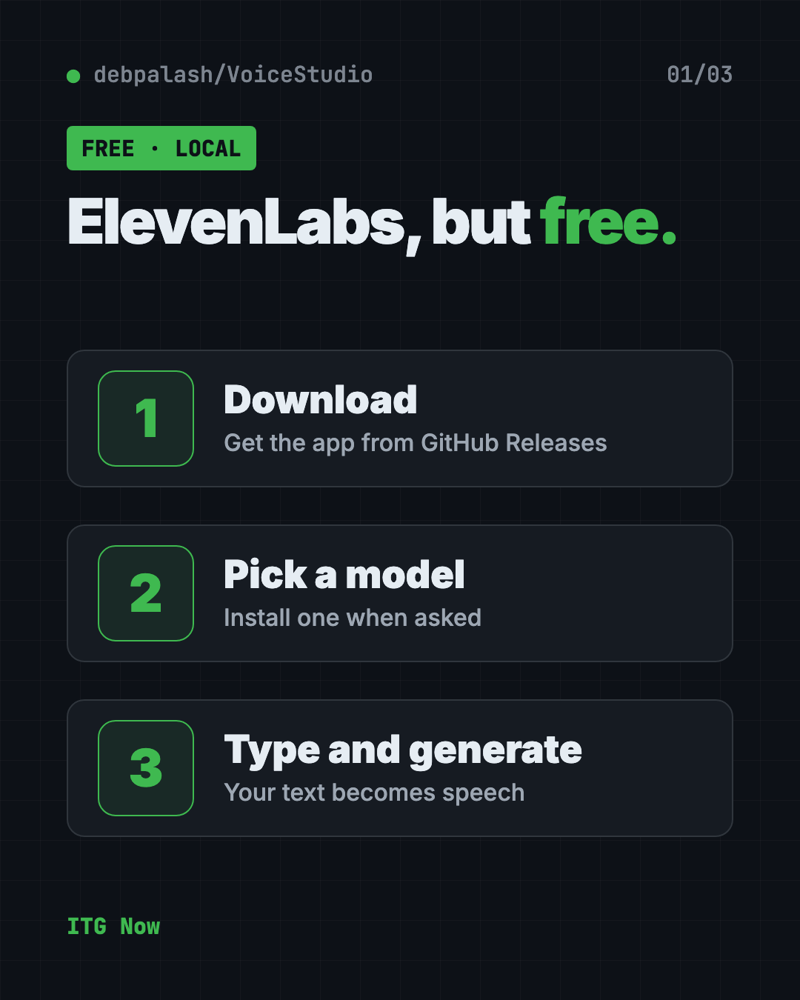
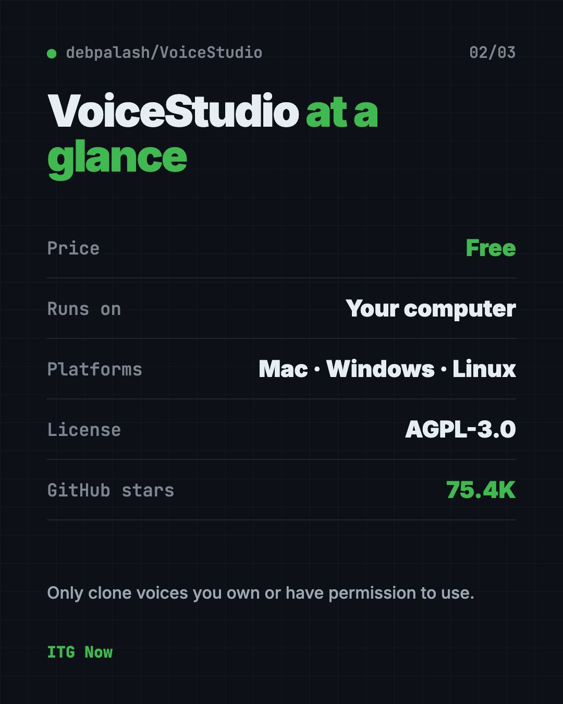
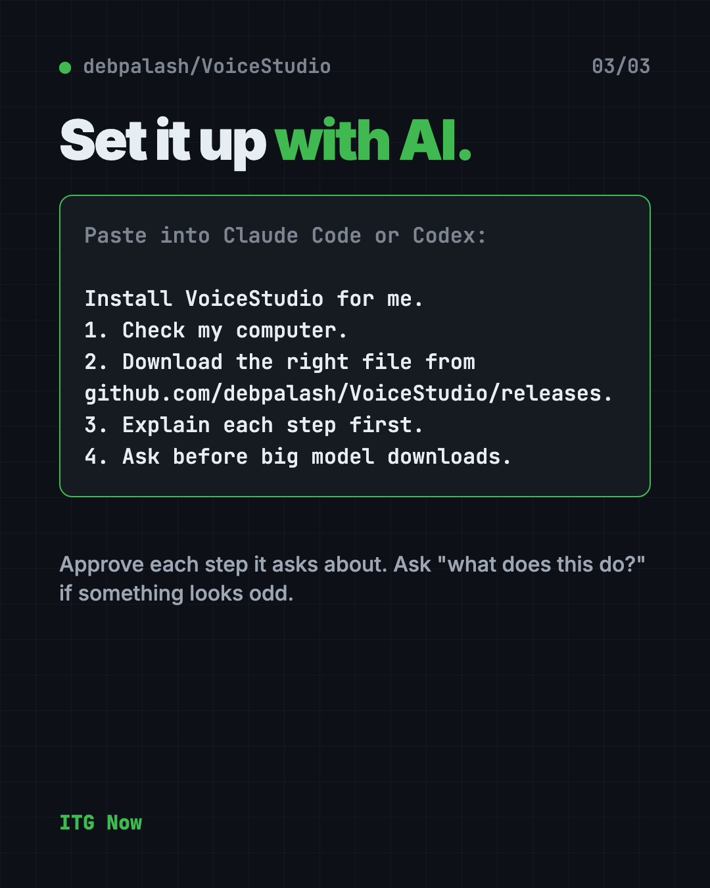

VoiceStudio: Free ElevenLabs Alternative (2026 Guide)
- Published 19 Oct 2026
- 7 min read
- License AGPL-3.0
- By the ITG Now team
In this guide (12)
VoiceStudio is a free ElevenLabs alternative that runs on your own computer. You can clone a voice, dub a video, or turn typed text into speech without paying a monthly fee.
Here's what it does, how you install it, and a few ways to use it. There's also one rule to follow: only clone voices you've got permission to use.
See all free alternatives to ElevenLabs
Key takeaways
- Free and open source. You won't pay a subscription. The README lists none, and the app is under the AGPL-3.0 license.
- Runs on your computer. It's your hardware doing the work, not a company's server.
- Many jobs in one app. Clone a voice, design a new one, dub videos, dictate and make audiobooks.
- Mac, Windows and Linux. The latest release, 0.5.6, came out on September 23, 2026.
- One catch: if you don't have a graphics card, it still works but it's slower, and you'll need about 5 GB of free disk.

What is VoiceStudio?
VoiceStudio is a desktop app for making speech with AI. You type words, and it says them out loud in a voice you choose.
Its makers call it open-source voice cloning, voice design, video dubbing, dictation, transcription and audiobook creation in 646 languages. Voice cloning means copying how a person sounds from a short clean recording.
It is made by developer debpalash and shared on GitHub, where it has about 75.4K stars. Stars are like bookmarks, so a lot of people find it useful.
Is VoiceStudio really free?
Yes. The app is free to download and use under the AGPL-3.0 license. The README lists no paid plan.
For comparison, ElevenLabs lists its Creator plan, the one with pro voice cloning, at $22 a month on its pricing page (checked October 19, 2026). Its Starter plan is $6 a month.
One detail from the README: the app license is separate from the license of each voice model. A free app doesn't mean every model allows commercial use. Check the model's own notice before you sell anything you make.
How to use VoiceStudio (real examples)
- Narrate a video. Write your script, pick a voice, and generate the voiceover for a tutorial or slideshow.
- Dub a video. Load a clip and make new speech that matches the timing.
- Make an audiobook. Paste in a story and turn it into audio you can listen to on a walk.
- Dictate instead of typing. The app has a floating dictation widget that turns your speech into text.
- Design a new voice. Describe the voice you want in words instead of recording one.

⚠️ Heads up: Only clone your own voice, or a voice you have clear permission to use. The README says the same thing.
Does VoiceStudio work without internet?
Mostly yes. The README says local workflows run on your hardware. Remote services are optional, and usage analytics only turns on if you agree.
You still need the internet to download the app and each voice model once.
VoiceStudio at a glance
| Price | Free |
| Works offline | Local workflows run on your computer, after a model download |
| Platforms | Mac, Windows, Linux |
| License | AGPL-3.0 (open source) |
| Latest version | 0.5.6 (September 23, 2026) |
| Disk space | About 5 GB for the small CPU setup |
| Best for | Creators who want voiceovers, dubbing and dictation without a monthly fee |
Who should use VoiceStudio?
- YouTubers and video makers who need voiceovers.
- Marketers who dub clips into other languages.
- Writers who want to hear their story read aloud.
- Students who want to turn notes into audio.
- Anyone paying for a voice app who wants a free option to test first.
It needs a computer, so it isn't a phone app. The README mentions iOS and Android companion apps as a preview only.
How to install VoiceStudio
These steps follow the VoiceStudio README. Use the official Releases page.
- Open the Releases page at github.com/debpalash/VoiceStudio/releases.
- Download the file for your computer. Mac uses a
.dmg. Windows uses an.exe. Linux uses an.AppImageor.deb. - Install it like any other app.
- Open Voice cloning, choose a voice or add a clean recording, and type your text.
- Press generate. Install the model it asks for when prompted.
The README also shows a one-line installer that runs a script from the project's own website. We'd suggest the Releases download above instead, because you can see exactly what you are getting.
Hardware matters. An NVIDIA graphics card (Windows or Linux) or an Apple Silicon Mac gives you faster results. With no dedicated graphics card, VoiceStudio is fully usable on the CPU, only slower. An Intel Mac can only use the app screen and must connect to a remote backend, per the README.
💡 Tip: Download the first model on good Wi-Fi. Speech models are large files.
Let Claude or Codex set it up for you
Claude Code and OpenAI Codex are AI helpers that can run setup steps on your computer for you. You paste a request, it does the steps, and you approve each one.
Copy and paste this:
Please help me install VoiceStudio, the free voice cloning and text to speech app.
1. Check what computer I have (Mac, Windows or Linux, and whether it has a graphics card).
2. Download the right file from github.com/debpalash/VoiceStudio/releases.
3. Install it, and tell me what each step does before you run it.
4. Ask me before any big model download.
5. Help me make a short test voiceover to check it works.
Then try asking:
VoiceStudio is slow on my computer. Help me check whether it is using my graphics card.
Which VoiceStudio voice model should I pick for narrating a 2 minute video?
Read the VoiceStudio licensing notes and tell me if I can use my voiceovers in paid work.

What are VoiceStudio's limits?
- Slower without a graphics card. CPU-only use works but takes longer.
- Big downloads. Setup uses about 5 GB, plus each model.
- Intel Macs are limited. You need a remote backend.
- Windows on ARM is experimental, per the README.
- Model rules differ. Each model has its own license and conditions.
Our take
VoiceStudio packs a lot into one free app. If you only want to test AI voices, it costs you nothing but disk space.
What we like:
- Free, with no paid tier in the README.
- Cloning, dubbing, dictation and audiobooks in one place.
- Local workflows, so your recordings stay on your computer.
- Clear license notes, including that model rules are separate.
What to watch for:
- Slower and bigger than it looks if you have no graphics card.
- You are responsible for permission when you clone a voice.
- The AGPL-3.0 license has conditions if you build it into a product.
Want free voice typing only? Try Handy, a free offline voice typing app. Need long recordings turned into text? Read our VibeVoice guide.
FAQ
Is VoiceStudio a free ElevenLabs alternative?
Yes. VoiceStudio is a free, open-source app that clones voices, dubs videos and makes speech on your own computer. ElevenLabs is a paid service.
Does VoiceStudio work on Mac and Windows?
Yes. It runs on Mac, Windows and Linux. Intel Macs are limited and need a remote backend.
Can I clone any voice with VoiceStudio?
No. Only clone your own voice or one you have permission to use. The README says clone voices only with permission.
Do I need a graphics card for VoiceStudio?
No. It works on a regular processor, only slower. A graphics card or an Apple Silicon Mac makes it faster.
Can I use VoiceStudio for paid work?
The app license allows commercial use under its conditions. Voice models have separate rules, so check each model's notice first.
How big is the VoiceStudio download?
The small CPU setup needs about 5 GB of free disk, and each voice model is an extra download.
Get VoiceStudio: github.com/debpalash/VoiceStudio
More free voice and audio tools
- Folia Folia is a free animated lyrics music player that shows full-screen moving lyrics for your local music, Navidrome and more. What it does and how to start.
- OpenReel OpenReel is a free online video editor with no watermark. Cut clips, add captions, mix music and export up to 4K, right in your web browser.
- Brag Brag is a free AI launch video maker. Type one command in Claude Code or Codex and it turns your project into a short video with music and share text.
- Meetily Meetily is a free AI meeting note taker. It transcribes your calls live and writes summaries on your own computer, so recordings never have to leave it.
- Open Notebook Open Notebook is a free NotebookLM alternative you run yourself. Chat with your PDFs and videos, get cited answers, and turn notes into podcasts.
- Handy Handy is a free offline voice typing app. Press a key, talk, and your words appear in any app on Mac, Windows or Linux. Your voice stays on your computer.
Latest AI news
- Meta gives away its big Muse Spark AI for free
- Survey: AI makes managing harder for managers
- CrowdStrike: hackers bypass AI guardrails with agentic attacks
- NVIDIA releases Kumo Forecast time-series model
Keep reading

HyperFrames: Make AI Videos From HTML
HyperFrames is a free tool that makes AI video from HTML. Your AI agent writes a web page, and HyperFrames renders it into an MP4 video.